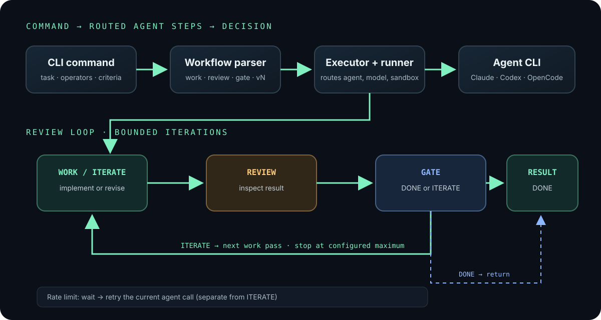

Context switching
Read an output, clarify the task, approve a change, inspect again, and restart the conversation.
Marcelo Serpa
01 / the current workflow
Read an output, clarify the task, approve a change, inspect again, and restart the conversation.
Independent agents need separate workspaces, clear boundaries, and a way to compare results.
Approvals can pause a run. Switching away and returning later adds friction and lost context.
Fear Of Missing Agent Time — an informal name for the feeling that idle agent time is wasted time.
02 / cook
“A simple CLI for orchestrating Claude Code, Codex, and OpenCode.”
Cook gives agent work a small workflow vocabulary: repeat, review, branch, and resolve.
Cook is the coordinator. The coding and review calls still come from the configured agent CLIs.
03 / getting started
04 / command line
Creates project instructions, Cook configuration, and a sandbox Dockerfile.
Checks Docker readiness, the sandbox image, agent CLIs, and credentials.
Open an interactive sandbox shell or run a command inside it.
05 / workflow at a glance

06 / step vocabulary
Runs the task prompt and creates or changes the solution.
Looks for gaps, defects, and unmet acceptance criteria.
Returns DONE or ITERATE based on the gate criteria. This is an agent step.
Addresses review/gate findings on the next pass. If no iterate step is configured, work runs again.
An outer loop repeats work until its gate says DONE or the configured limit is reached.
Iteration limits stop an endless loop; they do not prove the result is correct.
07 / configuration
Work → Codex / gpt-6-luna
Review, gate, iterate, ralph → Claude / Sonnet
Default → Claude / Opus
Sandbox → Docker
Example mirrors the Cook banner used in this PoC. Model names and routing are configuration choices, not Cook defaults.
08 / composing commands
Operators compose left to right. Each wraps the expression before it.
09 / review loop
Default 3x iterations.
10 / parallel execution → resolution
One task · isolated worktrees
Candidate A
Candidate B
Candidate N
Select one candidate.
Combine changes into one result.
Review options and choose manually.
11 / execution boundary
12 / live demo
13 / learnings so far